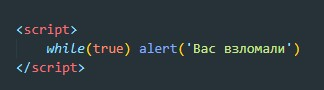
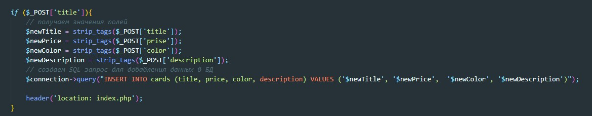
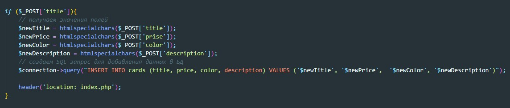

XSS - (англ. Cross-Site Scripting — «межсайтовый скриптинг») — довольно распространенная уязвимость, которую можно обнаружить на множестве веб-приложений. Ее суть довольно проста, злоумышленнику удается внедрить на страницу JavaScript-код, который не был предусмотрен разработчиками.
Допустим у нас есть форма, для отправки комментариев. В поле ввода можно ввести вот такой код:
Этот код будет бесконечно выводить alert
Что бы избежать добавления тегов в сообщении можно использовать метод strip_tags
Минус этого метода в том, что если пользователь без злого умысла захочет указать в сообщении знак больше или меньше (< или >), то strip_tags вырежет все, что будет между ними или же просто удалит эти знаки.
Кроме strip_tags можно использовать htmlspecialchars - этот метод преобразует теги в строки и браузер не будет воспринимать код как код. Для него это будет обычная строка
